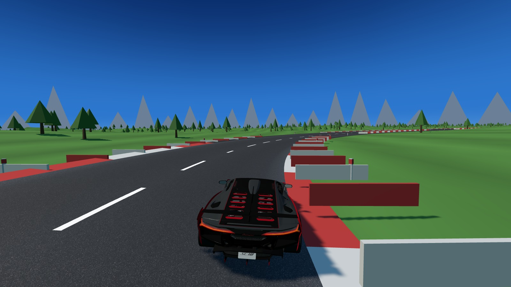

VROOM
Arcade driving · Play in browser · Free
Pick a circuit, pick a car, drive. Flat-shaded and readable like the racers it comes from — and underneath, four wheels on four springs, weight that moves when you brake, and tyres that give up gradually instead of all at once. Every car is built from the real one's torque curve, gearing and drag, then measured in the running game to make sure it does what the card says.
It is not trying to be Gran Turismo and it is not trying to be Assetto Corsa. A real car, in an arcade world: six cars across five drivetrain layouts, six circuits, and nothing to set up before you are allowed to move.
Keyboard or gamepad, in a desktop browser. Touch controls are on the list.